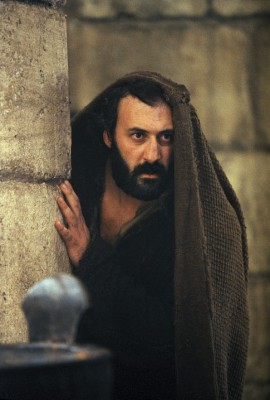

Meine Filme

Darsteller Francesco De Vito
Alle Darsteller
Nr.
Titel
Jahr
FSK
Minuten
Auflösung
IMDB
Meta
Genre
2303
Codename U.N.C.L.E.
2015
12
116
1080p
7.3 / 10
56
Action
8150
I Am David
2003
91
1080p
7.3 / 10
0
Drama
4697
Junge Messias, Der
2016
12
111
1080p
5.4 / 10
0
Drama
399
Mission: Impossible 3
2006
12
126
1080p
6.9 / 10
66
Action
6488
Passion Christi, Die
2004
16
126
1080p
7.2 / 10
0
Drama
7071
To Rome with Love
2012
0
111
1080p
6.3 / 10
0
Komödie
8919
When in Rome - Fünf Männer sind vier zuviel
2010
0
90
1080p
5.6 / 10
0
Komödie